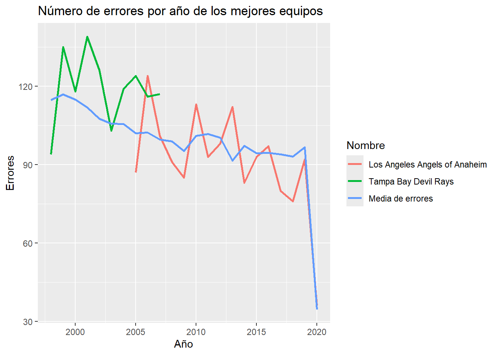

# libraries required
library(openintro) #data
library(data.table) #database manipulation
library(ggplot2) #Graphics
library(viridis) #Color palettes
library(plotly) #Interactive plots
library(stringr) # To work with strings
# load data
#?openintro::mlb_teams #information about the dataset
data = mlb_teamsProyecto_ViernesBioinformatica_2024
Proyecto final
Proyecto final para el curso: Viernes de bioinformática 2024-2:
Datos y preguntas
El conjunto de datos utilizado fue mlb_teams del paquete openintro. Este conjunto de datos contiene información de equipos de las Grandes Ligas de Béisbol. Para cargar los datos utilizamos el paquete openintro.
dim(data) #Dimension 2784 41[1] 2784 41summary(data) #summary of variables in data year league_id division_id rank
Min. :1876 Length:2784 Length:2784 Min. : 1.000
1st Qu.:1930 Class :character Class :character 1st Qu.: 2.000
Median :1970 Mode :character Mode :character Median : 4.000
Mean :1963 Mean : 3.981
3rd Qu.:1997 3rd Qu.: 5.000
Max. :2020 Max. :12.000
games_played home_games wins losses
Min. : 57.0 Min. :24.00 Min. : 9.00 Min. : 14.00
1st Qu.:154.0 1st Qu.:77.00 1st Qu.: 67.00 1st Qu.: 67.00
Median :161.0 Median :81.00 Median : 78.00 Median : 77.00
Mean :153.1 Mean :78.01 Mean : 76.19 Mean : 76.19
3rd Qu.:162.0 3rd Qu.:81.00 3rd Qu.: 88.00 3rd Qu.: 87.00
Max. :165.0 Max. :84.00 Max. :116.00 Max. :134.00
NA's :228
division_winner wild_card_winner league_winner world_series_winner
Length:2784 Length:2784 Length:2784 Length:2784
Class :character Class :character Class :character Class :character
Mode :character Mode :character Mode :character Mode :character
runs_scored at_bats hits doubles
Min. : 219.0 Min. :1752 Min. : 390 Min. : 39.0
1st Qu.: 619.0 1st Qu.:5205 1st Qu.:1316 1st Qu.:199.8
Median : 693.0 Median :5422 Median :1398 Median :238.0
Mean : 687.6 Mean :5228 Mean :1367 Mean :234.7
3rd Qu.: 765.0 3rd Qu.:5527 3rd Qu.:1470 3rd Qu.:274.0
Max. :1220.0 Max. :5781 Max. :1783 Max. :376.0
triples homeruns walks strikeouts_by_batters
Min. : 3.00 Min. : 0.0 Min. : 18.0 Min. : 35.0
1st Qu.: 30.00 1st Qu.: 57.0 1st Qu.:435.0 1st Qu.: 532.0
Median : 40.00 Median :114.0 Median :499.0 Median : 800.0
Mean : 45.47 Mean :110.3 Mean :487.4 Mean : 781.8
3rd Qu.: 57.00 3rd Qu.:156.0 3rd Qu.:558.0 3rd Qu.: 998.2
Max. :150.00 Max. :307.0 Max. :835.0 Max. :1595.0
NA's :16
stolen_bases caught_stealing batters_hit_by_pitch sacrifice_flies
Min. : 13.0 Min. : 3.00 Min. : 7.00 Min. : 7.00
1st Qu.: 63.0 1st Qu.: 34.00 1st Qu.: 32.00 1st Qu.:38.00
Median : 92.0 Median : 44.00 Median : 43.00 Median :44.00
Mean :106.2 Mean : 47.55 Mean : 45.17 Mean :44.23
3rd Qu.:135.0 3rd Qu.: 57.00 3rd Qu.: 56.00 3rd Qu.:51.00
Max. :441.0 Max. :191.00 Max. :160.00 Max. :77.00
NA's :76 NA's :708 NA's :1066 NA's :1370
opponents_runs_scored earned_runs_allowed earned_run_average complete_games
Min. : 209.0 Min. : 78.0 Min. :1.220 Min. : 0.00
1st Qu.: 615.0 1st Qu.: 518.0 1st Qu.:3.400 1st Qu.: 9.00
Median : 692.0 Median : 601.0 Median :3.860 Median : 39.00
Mean : 687.6 Mean : 587.7 Mean :3.861 Mean : 45.76
3rd Qu.: 766.0 3rd Qu.: 675.0 3rd Qu.:4.332 3rd Qu.: 73.00
Max. :1252.0 Max. :1023.0 Max. :6.710 Max. :148.00
shutouts saves outs_pitches hits_allowed
Min. : 0.000 Min. : 0.00 Min. :1419 Min. : 376
1st Qu.: 6.000 1st Qu.:11.00 1st Qu.:4101 1st Qu.:1306
Median : 9.000 Median :27.00 Median :4278 Median :1399
Mean : 9.857 Mean :25.64 Mean :4099 Mean :1367
3rd Qu.:13.000 3rd Qu.:39.00 3rd Qu.:4345 3rd Qu.:1474
Max. :32.000 Max. :68.00 Max. :4518 Max. :1993
homeruns_allowed walks_allowed strikeouts_by_pitchers errors
Min. : 2.0 Min. : 24.0 Min. : 22.0 Min. : 20.0
1st Qu.: 64.0 1st Qu.:439.0 1st Qu.: 531.0 1st Qu.:111.0
Median :117.0 Median :500.0 Median : 784.0 Median :139.0
Mean :110.3 Mean :487.8 Mean : 781.2 Mean :168.2
3rd Qu.:155.0 3rd Qu.:558.0 3rd Qu.:1001.0 3rd Qu.:189.0
Max. :305.0 Max. :827.0 Max. :1687.0 Max. :639.0
double_plays fielding_percentage team_name ball_park
Min. : 18.0 Min. :0.825 Length:2784 Length:2784
1st Qu.:122.0 1st Qu.:0.969 Class :character Class :character
Median :142.0 Median :0.977 Mode :character Mode :character
Mean :136.9 Mean :0.971
3rd Qu.:158.0 3rd Qu.:0.981
Max. :217.0 Max. :0.991
home_attendance
Min. : 0
1st Qu.: 534826
Median :1184548
Mean :1375102
3rd Qu.:2068023
Max. :4483350
NA's :108 head(data) #first rows in data year league_id division_id rank games_played home_games wins losses
1 1876 NL 4 70 NA 39 31
2 1876 NL 1 66 NA 52 14
3 1876 NL 8 65 NA 9 56
4 1876 NL 2 69 NA 47 21
5 1876 NL 5 69 NA 30 36
6 1876 NL 6 57 NA 21 35
division_winner wild_card_winner league_winner world_series_winner
1 N
2 Y
3 N
4 N
5 N
6 N
runs_scored at_bats hits doubles triples homeruns walks strikeouts_by_batters
1 471 2722 723 96 24 9 58 98
2 624 2748 926 131 32 8 70 45
3 238 2372 555 51 12 4 41 136
4 429 2664 711 96 22 2 39 78
5 280 2570 641 68 14 6 24 98
6 260 2180 494 39 15 2 18 35
stolen_bases caught_stealing batters_hit_by_pitch sacrifice_flies
1 NA NA NA NA
2 NA NA NA NA
3 NA NA NA NA
4 NA NA NA NA
5 NA NA NA NA
6 NA NA NA NA
opponents_runs_scored earned_runs_allowed earned_run_average complete_games
1 450 176 2.51 49
2 257 116 1.76 58
3 579 238 3.62 57
4 261 116 1.67 69
5 344 121 1.69 67
6 412 173 2.94 56
shutouts saves outs_pitches hits_allowed homeruns_allowed walks_allowed
1 3 7 1896 732 7 104
2 9 4 1777 608 6 29
3 0 0 1773 850 9 34
4 11 0 1872 570 2 27
5 5 0 1929 605 3 38
6 2 0 1590 718 8 24
strikeouts_by_pitchers errors double_plays fielding_percentage
1 77 442 42 0.860
2 51 282 33 0.899
3 60 469 45 0.841
4 114 337 27 0.888
5 125 397 44 0.875
6 37 473 18 0.825
team_name ball_park home_attendance
1 Boston Red Caps South End Grounds I NA
2 Chicago White Stockings 23rd Street Grounds NA
3 Cincinnati Reds Avenue Grounds NA
4 Hartford Dark Blues Hartford Ball Club Grounds NA
5 Louisville Grays Louisville Baseball Park NA
6 New York Mutuals Union Grounds (Brooklyn) NAPodemos ver que la base de datos cuenta con 2784 filas y 41 columnas. Con summary podemos tener una vision general de las variables, por ejmplo, podemos ver que los datos corresponden a las Grandes Ligas de Beisbol entre 1876 y 2020, así como podemos ver estadísticas básicas de las variables numéricas e identificar la clase de todas las variables. Hay algunas que contienen NA’s, por ejemplo, strikeouts_by_batters y sacrifice_flies, variables muy especificas del desempeño de los jugadores y de los equipos. Teniendo en cuenta esta revisión general, se plantean las siguientes preguntas:
¿Cómo ha sido el desempeño (Rank) de los equipos de besisbol a traves de los años?
¿Cuántos de los equipos en el top 20 de los que han jugado mas juegos, han jugado en casa y han jugado la liga NL? ¿Cuántos la liga AL? ¿Cuáles?
¿Cuáles equipos con un nombre de mas de dos palabras tienen mas de 3000 outs_pitches y han tenido menos errores que la media por año entre 1950-2020 y a qué ligas pertenecen?
Respuestas
Para contestar las preguntas se utilizó el código que se muestra a continuación. Para manipular los datos se empleó uno de los paquetes vistos en el curso “data.table”, para las funciones se utilizó programación defensiva y para los gráficos se utilizó ggplot.
¿Cómo ha sido el desempeño (Rank) de los equipos de besisbol a traves de los años?: En la gráfica se puede ver que el número de juegos jugados en general ha aumentado a lo largo de los años y ha disminuido su variabilidad, exceptuando algunos años en los que hubo menor cantidad de juegos y mayor varibilidad: 1918, 1919, 1972, 1981, 1994, 1995 y 2020. El número de juegos tuvo un crecimiento rápido entre 1876 y 1900, que se estabilizó después de 1900 y luego tuvo un ligero aumento a partir de 1960. En cuanto al desempeño de los equipos, se puede ver que ha tendido a mejorar, sin embargo, se puede ver que los puntos de cambio en la tendencia se ven rodeados de bajos rendimientos en los equipos.
# Transform data to manipulate it data_dt = as.data.table(data) # Add variable for labels in interactive plot data_dt <- data_dt[,tooltip_text := paste("Team:", team_name, "<br>Year:", year, "<br>Rank:", rank, "<br>Games Played:", games_played)] # Create the scatter plot p <- ggplot(data_dt, aes(x = year, y = games_played, color = factor(rank), text = tooltip_text)) + geom_point(alpha = 0.6) + # alpha for transparency dots scale_color_viridis_d(option = "plasma") + # plasma: name of set of colors labs(title = "Juegos jugados vs año con rango de equipos", x = "Año", y = "Juegos jugados", color = "Rango") # Convert to plotly ggplotly(p, tooltip = "text")¿Cuántos de los equipos en el top 20 de los que han jugado mas juegos, han jugado en casa y han jugado la liga NL? ¿Cuántos la liga AL? ¿Cuáles?
Para esta pregunta se realizó una función para encontrar el top x de equipos dada una variable. Además, se utilizó programación defensiva, uno de los temas vistos en el curso, para asegurar que la función corra adecuadamente y si no que retorne un mensaje indicando el error.
# Function for teams in top x for a picked variable top_teams = function(data, top_variable, number_top){ # Check variable name in character stopifnot(is.character(top_variable)) # Ensure the variable exists in data if (!(top_variable %in% colnames(data))) { stop("Invalid variable name. Please check the variable name.") } # Check variable number is numeric stopifnot(is.numeric(number_top)) # Find top teams for top_Variable top_team = setorder(data[,sum(get(top_variable)),by=c("team_name")],V1)[1:number_top] # Return top teams return(top_team) } # Test the function top_teams(data_dt, 20, 20) # wrong variableError in top_teams(data_dt, 20, 20): is.character(top_variable) is not TRUEtop_teams(data_dt, "variable", 20) # wrong variableError in top_teams(data_dt, "variable", 20): Invalid variable name. Please check the variable name.top_teams(data_dt, "games_played", "20") # wrong top numberError in top_teams(data_dt, "games_played", "20"): is.numeric(number_top) is not TRUEAhora que hemos verificado que la función corre adecuadamente, podemos utilizarla:
top_teams_gp = top_teams(data_dt, "games_played", 20) # top 20 teams per games_played team_selected = data_dt[home_games>0 & (team_name %in% top_teams_gp$team_name),.(team_name,league_id)] # select from top teams those that achive the other conditions team_selectedteam_name league_id <char> <char> 1: Cleveland Bronchos AL 2: Boston Rustlers NL 3: Philadelphia Blue Jays NL 4: Philadelphia Blue Jays NL 5: Houston Colt .45's NL 6: Houston Colt .45's NL 7: Houston Colt .45's NL 8: Seattle Pilots ALteam_selected[,.N,by=.(team_name,league_id)] #unique teams per leagueteam_name league_id N <char> <char> <int> 1: Cleveland Bronchos AL 1 2: Boston Rustlers NL 1 3: Philadelphia Blue Jays NL 2 4: Houston Colt .45's NL 3 5: Seattle Pilots AL 1team_selected[,.N,by=.(team_name,league_id)][,.N,by=league_id] #count of unique teams per leagueleague_id N <char> <int> 1: AL 2 2: NL 3Podemos ver que hay cinco equipos del top 20 de los que han jugado más juegos que cumplen con haber jugado en casa y que además lo han hecho en varios años ya que se encuentran repetidos. De estos, tres pertenecen a la liga NL (National League) y dos pertenecen a la liga AL (American League).
¿Cuáles equipos con un nombre de más de tres palabras tienen más de 3000 outs_pitches y han tenido menos errores que la media por año entre 1950-2020 y a qué ligas pertenecen?
Aquí nuevamente se hizo uso del paquete data.table , uno de los paquetes vistos en el curso.
mean_errors_year = data_dt[,.(mean_errors_year = mean(errors)),by=.(year)] # calculate mean error per year data_dt_errors_year = data_dt[mean_errors_year,,on=c("year")] # Join mean error variable to original data base head(data_dt_errors_year[,.(errors,mean_errors_year)])errors mean_errors_year <int> <num> 1: 442 390.5 2: 282 390.5 3: 469 390.5 4: 337 390.5 5: 397 390.5 6: 473 390.5# Find teams that achive the conditions best_teams = data_dt_errors_year[,length_name := str_count(trimws(data_dt$team_name)," ")+1][outs_pitches>3000 & errors<mean_errors_year & 1950<year & year<2020 & length_name>3,.(team_name,year,league_id)] best_teamsteam_name year league_id <char> <int> <char> 1: Tampa Bay Devil Rays 1998 AL 2: Tampa Bay Devil Rays 2003 AL 3: Los Angeles Angels of Anaheim 2005 AL 4: Los Angeles Angels of Anaheim 2008 AL 5: Los Angeles Angels of Anaheim 2009 AL 6: Los Angeles Angels of Anaheim 2011 AL 7: Los Angeles Angels of Anaheim 2012 AL 8: Los Angeles Angels of Anaheim 2014 AL 9: Los Angeles Angels of Anaheim 2015 AL 10: Los Angeles Angels of Anaheim 2017 AL 11: Los Angeles Angels of Anaheim 2018 AL 12: Los Angeles Angels of Anaheim 2019 AL# Compare number of errors of these teams in all years wins_best_team = data_dt_errors_year[team_name %in% best_teams$team_name,.(team_name,errors,year,mean_errors_year)] # Plot line plot ggplot(wins_best_team, aes(x = year, y = errors, color = factor(team_name))) + geom_line(linewidth = 1) + geom_line(aes(x=year,y=mean_errors_year,color="Media de errores"), linewidth=1) + labs(title = "Número de errores por año de los mejores equipos", x = "Año", y = "Errores", color = "Nombre")
Se puede ver que efectivamente los grupos tienen un número de errores menor que la media entre los años 1950 y 2020, además, se observa que los equipos solo participaron al tiempo en las grandes ligas de baseball entre el 2005 y el 2007. Por otro lado, hay una tendencia decreciente del número de errores a lo largo de los años, mostrando una mejora en el desempeño de los equipos.